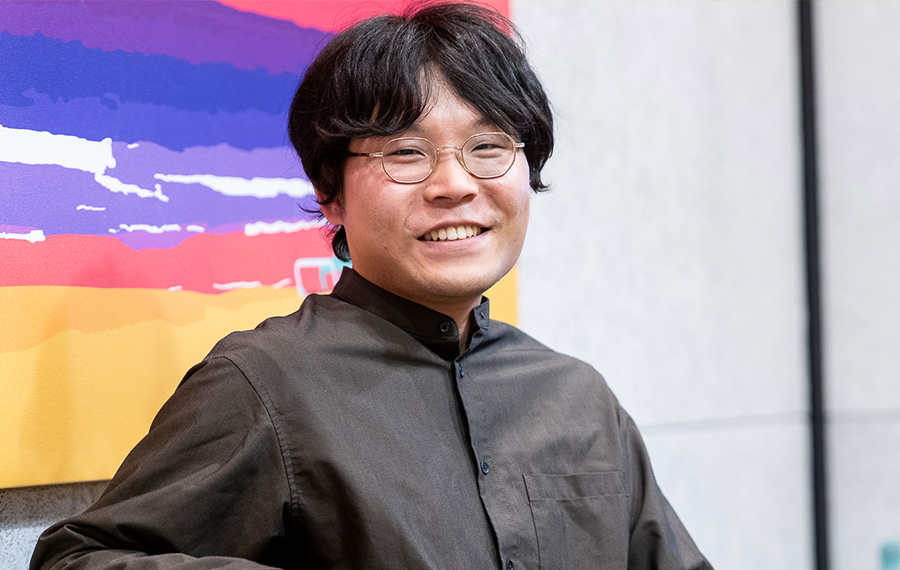
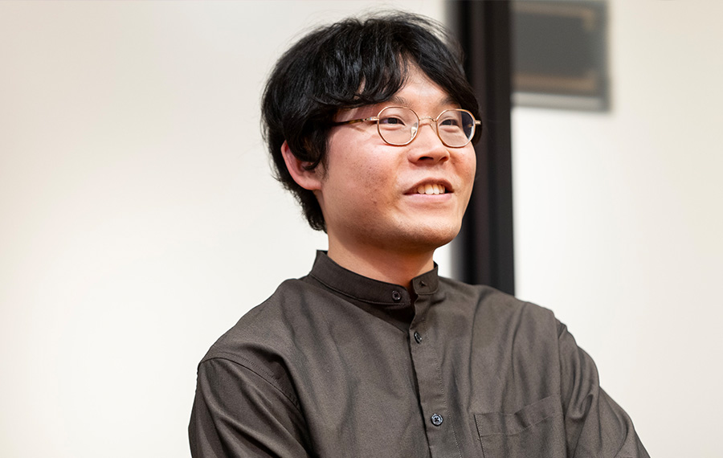
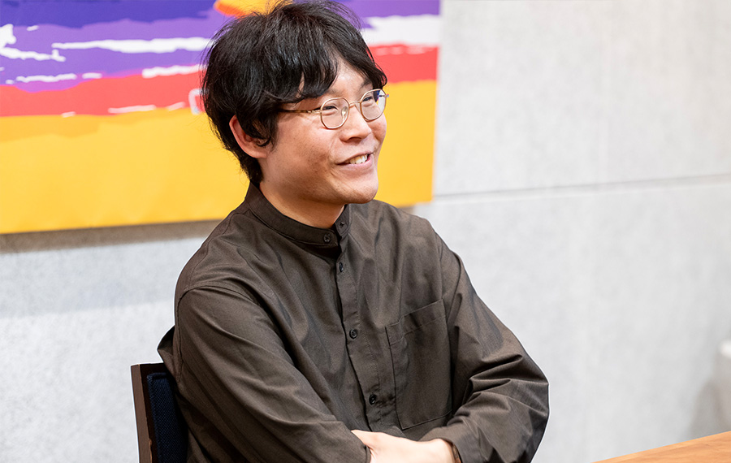
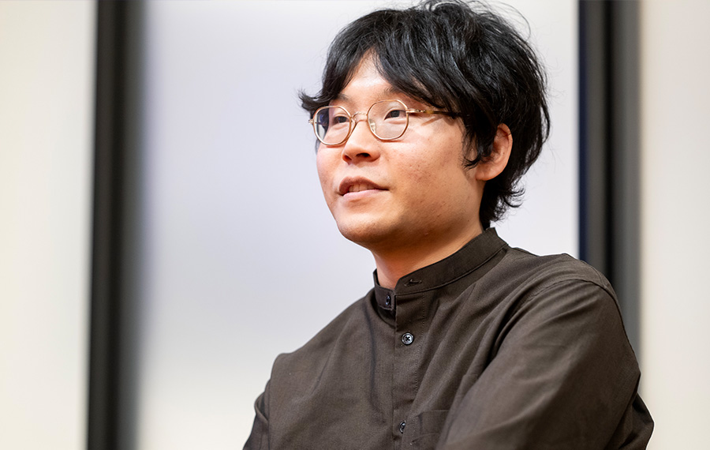

ユーザーが「便利すぎて思わず笑う」最高のプロダクトをつくりたい

藤坂 祐史
ソフトウェアエンジニア
2017年筑波大学情報学群情報メディア創成学類卒業。2018年筑波大学大学院を中退後、クックパッド株式会社に入社。新規サービスの企画やiOS/Webアプリ開発等に従事。2023年11月にデジタル庁へ民間専門人材として入庁。大学在学中に個人でiOSアプリを企画・開発し、U-22プログラミング・コンテスト2015経済産業大臣賞受賞。2016年度未踏IT人材発掘・育成事業スーパークリエータ認定。教員免許（中学数学、高校数学、高校情報）所持。
── もともとエンジニアになろうと思った背景は何だったのですか。
私は携帯電話もほぼ圏外になるような自然豊かな和歌山の山奥の農家で育ちました。友達は近くに住んでいませんし、学校に行くにも山道を車で送ってもらう場所です。上下水道も通っておらず、井戸水と浄化槽で暮らしていましたが、電気と光ファイバーは通っていたおかげで割と早い時期から常時接続のインターネットが使えていました。
小学校低学年の頃、父親が古いWindows 95のノートPCを譲ってくれました。ひとりで暇だったので手当たり次第あらゆる設定をいじりまくって遊んでいました。システムファイルを壊してOSが起動しなくなって焦ったりしましたが、押し入れの奥からリカバリー用のフロッピーを発掘して生き返らせたり、RPGをやっているみたいでしたね。パソコンいじりが趣味になり、やがてプログラミングに繋がっていきました。
小さい頃からドラえもんが好きで、不便な環境が日常だったからか、それを一変できるひみつ道具の世界に憧れがあったのですが、ソフトウェアが自由に作れたらそういう夢みたいなことも現実にできると感じて、とてもワクワクしたというのがあると思いますね。
関連リンク
- https://speakerdeck.com/yujif/u-22-programming-contest?slide=23
── 大学在学中に未踏に採択されて、プロダクトをリリースしていますよね。
未踏事業では、振り返りのためのボイスメモiOSアプリ「Recoco（レココ）」を開発しました。講義やミーティングなどをこのアプリで録音すると、あとで聞き返したい大事な箇所がすぐに再生でき、復習が捗るものです。自分自身が今すぐほしいものを（まだないから）作ったという形でした。
口コミから広がっていき、雑誌やテレビでも紹介されて、App Storeのランキングで1位になったり、月間アクティブユーザーが17万人以上になったりと、予想よりも多くの人に使ってもらえました。しかし、アプリの不具合で迷惑をかけるなど不甲斐なさで心がつらくなったりもしました。実現したいことは沢山あるのに、実力も余裕も足りないという状態で苦しかった時期でもあります。
── 自分で起業するという選択肢を考えたことはありますか。

Recoco（レココ）でそういう話もありましたが、結局会社化までには至りませんでした。当時は大学4年生で、大学院進学、就職、起業で何が良いのだろうと悩んでいました。起業するチャンスなのかもしれないが、どこか違和感がある。そういう思いで踏み切れず、苦しい気持ちが続く中で、一つの転換点があり、本心で今やりたいのは「ソフトウェア開発者としての腕を磨くこと」だと気づいて、そちらに集中できる就職を選びました。
── どういう転換点だったのでしょう？
アメリカのシリコンバレーに連れて行ってもらえる企画に参加できて、そこでちょうどロールモデルとなるような研究者や起業家、エンジニアの方と現地で直接話す機会がありました。
その中で40代〜50代で最前線で活躍している日本人エンジニアの方が、少年のように楽しんで仕事をしている姿をみて、元々の楽しかった思い、何かを作り出したいと思えるワクワクした原体験を思い出せたんですよね。
「今やってる仕事、難しいんだけどワクワクするんだよね」
「表面的に使えたり作れるだけじゃなくて、見えないコアな部分、仕組みまで理解しているほうが楽しいし、人生が豊かになると思う」
そんな言葉を聞いて、「もっと技術を楽しみたいし、エンジニアとして強くなって作りたいものを作れるようになりたい」と、本心でやりたかったことが明確になりました。
まずは腕を磨ける場を探そうと思い、様々なIT企業でインターンをしてみて、クックパッドへの就職に繋がります。
── 藤坂さんにとって、エンジニアリングで何が一番興奮しますか。

使う人が喜ぶというか、心から笑顔になるものがいいですね。最高なツールやプロダクトを使ったとき「便利すぎて思わず笑う」みたいな経験ありませんか？作ったもので誰かが喜んでくれて、こっちも嬉しくなるというのはハッピーでいいなぁと思っています。ユーザーに価値を届けることが一番好きですね。
技術的に美しいものももちろん好きで、最終的に技術力が足りないとユーザーに満足に価値を届けられないことに繋がるので、技術そのものも楽しみながら磨き続けたいと常々思っています。
── 今どのような仕事をしていますか。
今はデジタル庁でフルタイムのソフトウェアエンジニアとして働いています。
たとえば、マイナンバーカードで行政手続きをオンライン化する「マイナポータル」や、本人確認を安全かつ簡単に行う「デジタル認証アプリ」など、政府のいくつかのWebサービスやアプリは、デジタル庁が担当しています。それらをより良くするために、民間出身のデザイナーやエンジニアなど、さまざまな専門性を持つ人材がチームを組んでプロダクト開発に取り組んでいます。
私はそういった中の一人で、一昨年の秋に転職で入庁し、主に国民向けのiOSアプリの内製開発に取り組んでいます。最近デジタル庁がApple社と協業して「iPhoneのマイナンバーカード」の提供を開始しましたが、マイナポータルのiOSアプリで実物のマイナンバーカードを使って発行する機能などの開発を担当しました。
── なぜデジタル庁でソフトウェアエンジニアとして働こうと思ったのですか？

大きく理由は2つあって、一つは「国の出すプロダクトを何とかしたい」気持ちからです。
行政のITサービスの使い勝手へのご意見をインターネットで良く見かけます。利用者の目線でより良くサービスを改善できるかは、提供者側で仕事をしている開発者の最後の一押しにかかっています。もし自分にできることがあるなら、実際に現場で手を動かしてサービスの改善に貢献したいという想いがありました。ちょうど私が得意とするiOSアプリ開発の領域でデジタル庁から民間専門人材の募集があり、ここなら貢献できると思い応募して今に至ります。
もう一つ、「行政についてもっと知りたい」という気持ちもありました。世の中の課題に対するアプローチは色々あると思いますが、行政も自分の生活に関わる大事な領域なのに自分はあまりよく仕組みを理解していないなと。法律や政策など、実際に何がどう動いていくのかの仕組みや構造にも興味がありました。実際の現場に身を置くことで、解像度が上がることが多いですよね。自分の専門であるソフトウェア開発を軸として活かしながら、学んでいきたいという狙いもありました。
── 実際に働いてみて、どうでしたか？
なかなか思うようにいかないこともありますが、ここでしか味わえない魅力があって、かなり楽しいですね。
技術的にも興味深い領域が色々あり知的好奇心も満たされますし、目の前の課題を解いていく面白さと、行政のサービスを自ら提供することへの責任とやりがいを日々感じながら働いています。
具体的な話はここでは省きますが、開発しているプロダクトや働き方などはデジタル庁のnoteやYouTubeなどでも公開しているので、興味があれば見ていただけるとうれしいです。
関連リンク
- 1億3000万人の課題解決を共に。ソフトウェアエンジニアとしてデジタル庁で働く意義
https://digital-gov.note.jp/n/ndb062ea18e4e
- https://www.youtube.com/@digital-agency-news/featured
── この先やりたいことはありますか。
今の職場に来た理由として、新しい視点や技術を身につけたい、それによってさらに良いモノづくりができるようになりたいという想いもあるので、これからも色んなことを楽しみながらもっと成長しつづけたいですね。
そして、できるようになったことを活かして、人々の心からの笑顔が増えるような 働きかけをしたいとずっと思っています。
私が高校生の時に聞いた、技術者で実業家の植松努さんの講演が今も心に残っています。彼が語ったのは、人の自信や可能性が奪われる『どーせ無理』という言葉を『だったらこうしてみたら？』に変えたいという想いでした。『だったらこうしてみたら？』が社会に広がるように、私も世の中に貢献していきたいと思っています。
関連リンク
- Hope invites | Tsutomu Uematsu | TEDxSapporo
https://www.youtube.com/watch?v=gBumdOWWMhY
企画・取材・編集 清水隆史